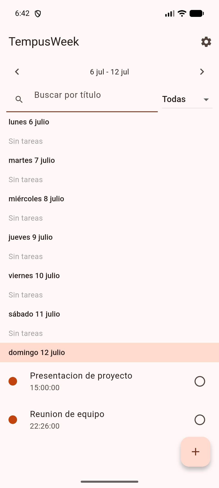
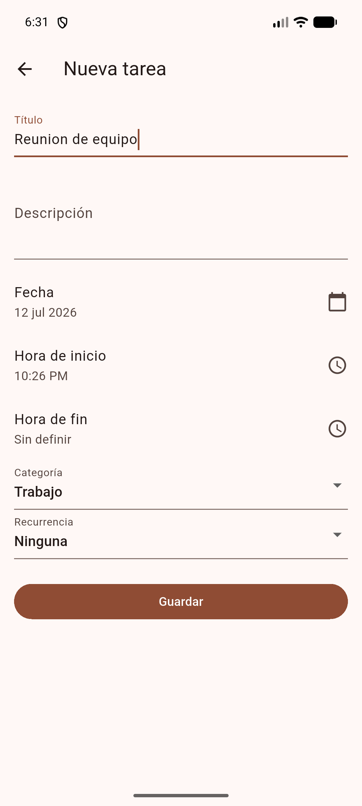
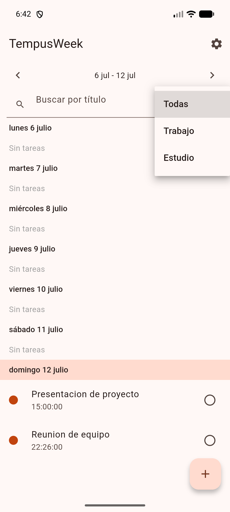

Un proyecto de TONIMED TECH
TempusWeek
Organiza tu semana desde el móvil, con categorías, tareas recurrentes
y recordatorios locales — funciona incluso sin conexión.
Un proyecto de TONIMED TECH
Organiza tu semana desde el móvil, con categorías, tareas recurrentes
y recordatorios locales — funciona incluso sin conexión.
Registro e inicio de sesión con JWT (Simple JWT). Los tokens se guardan cifrados en el dispositivo.
Vista semana a semana con navegación rápida entre días y búsqueda de tareas por título.
Crea categorías al vuelo desde el propio formulario de tarea y filtra la semana por categoría.
Repite una tarea diaria, semanal o mensualmente; cada ocurrencia se puede editar o borrar de forma independiente.
Toda la app funciona sin conexión gracias a una base de datos local (Drift); los cambios se sincronizan solos al recuperar red.
Notificación 15 minutos antes de cada tarea, generada en el propio dispositivo sin depender de servidores push.
La app en funcionamiento real



Disponible para Android 7.0 o superior (API 24+).
⬇ Descargar última versión (APK)Al instalar, acepta la instalación desde fuentes desconocidas en los ajustes de tu dispositivo.